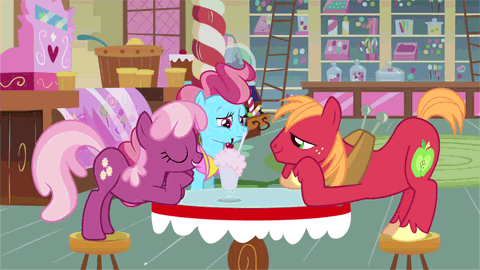
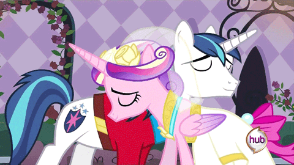

Yesterday my boyfriend told me he was afraid we were going to break up. Yeah. It sucks.
My boyfriend is my first love. The high school sweetheart I thought I'd never have.
It happened like a Taylor Swift music video. We were both young when I first saw him. Very young. We met years ago before we hit puberty. He was 1000% not a love interest. Instead, he was a tiny, not very friendly kid.
My boyfriend is my first love. The high school sweetheart I thought I'd never have.
Who would have thought this tiny kid would become super irresistible to me?
I saw him playing at a volleyball game. The feelings crept up on me. Next time I watched a game, I wanted to watch the team win a game after seeing a pretty bad loss. I kept coming, and I ignored how enamored I was until it was undeniable.
I would plan to wear my most appealing clothes to the games. You could say I was on the bleachers waiting for the day he would wake up and find me on the sidelines for once. I was fully convinced he had no interest in me because he never looked my way. He never looked at me in Spanish class either.

The rest is pure luck or divine intervention. I told my friend I thought he was cute and she tried to get him to ask me to prom. I'd like to say we asked each other, but I did most of the asking. We snapchatted pictures of our pets and sent messages back and forth after. The day before prom, I sent a selfie in response to his, and he wrote, “cute.”

The others left our table. I scooted my chair closer to him. He did too. I wrapped my arm around his and placed my head on his shoulder. He leaned my head against mine too. That moment was like the last episode of Avatar: The Last Airbender when Aang and Katara kiss and you know they will be happily ever after in their cartoon world. I confessed to him and asked him if he felt the same way to make sure. It was real!
The realization that the other person reciprocates the feelings is what makes adolescent love special. “Love” isn’t exactly what I felt. It was more like fascination-love. That feeling I felt at the prom table is something I will never have again.
Unnecessary detail here, I forgot the roses he got me at the venue. That was unfortunate. He bought me roses and I left them there to die. I don't know if that foreshadows that one of us is going to leave the other. I convinced myself that it didn’t matter because they were going to wilt anyway.
He sat next to me when he had the chance at school. I had him on a leash, my friends would say, like a puppy. Without confirming with me, he said “yes” when my friend asked him if I was his girlfriend. I thought of him like my cariño, “sweetie” in Spanish, which is different from “sweetie” because “cariño” implies caring, affection, and tenderness. He was my cariño, and I was his girlfriend.